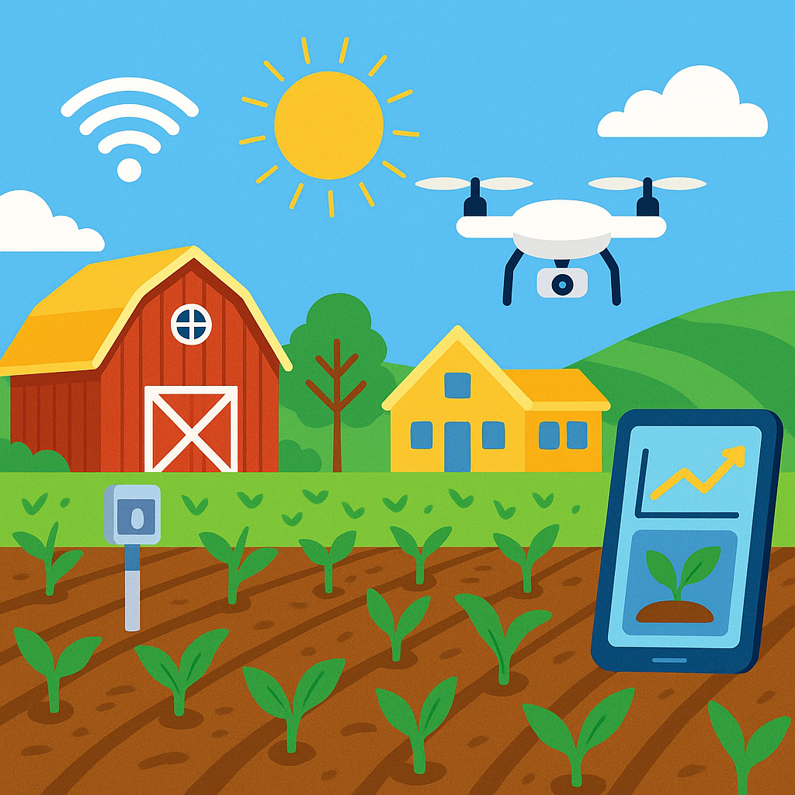

Welcome to the Future of Farming!
Explore how technology and nature work together to grow healthy crops while protecting the environment!
What is Green and Smart Farming?
- Green Farming
- Green Farming is an eco-friendly approach to agriculture that emphasizes sustainability, conservation, and the use of renewable resources. It aims to minimize the environmental impact of farming practices while maximizing productivity.
- Smart Farming
- Smart Farming is a modern agricultural practice that uses advanced technologies, such as IoT, AI, and big data, to optimize farming operations. It aims to increase efficiency, reduce waste, and improve crop yields while minimizing the environmental impact.
In Short: It’s farming that’s good for the environment and uses smart tools to make work easier!
Importance of Green and Smart Farming
Green and Smart Farming practices are essential for ensuring food security, protecting the environment, and promoting sustainable agricultural development. Here are some key benefits:

- Increased crop yields and farm productivity
- Reduced environmental impact and resource conservation
- Enhanced resilience to climate change and extreme weather
- Improved food quality and safety
- Empowerment of farmers through access to technology and information
Smart Farming Tools
Smart Farming tools are technologies that help farmers manage their crops and livestock more efficiently. Here are some examples:
| Tool | What It Does |
|---|---|
| Soil Sensors | Measure soil moisture and nutrients to help farmers know when to water and fertilize their crops. |
| Soil Sensors | Measure soil moisture and nutrients to help farmers know when to water and fertilize their crops. |
| Soil Sensors | Measure soil moisture and nutrients to help farmers know when to water and fertilize their crops. |
| Soil Sensors | Measure soil moisture and nutrients to help farmers know when to water and fertilize their crops. |
| Soil Sensors | Measure soil moisture and nutrients to help farmers know when to water and fertilize their crops. |